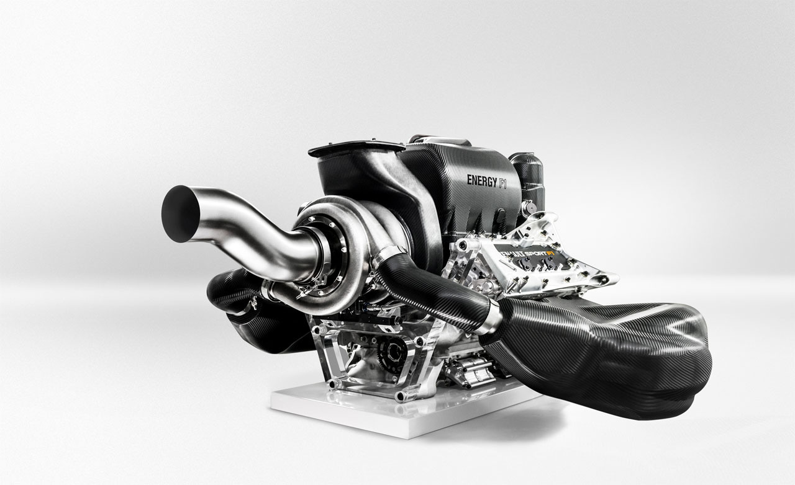
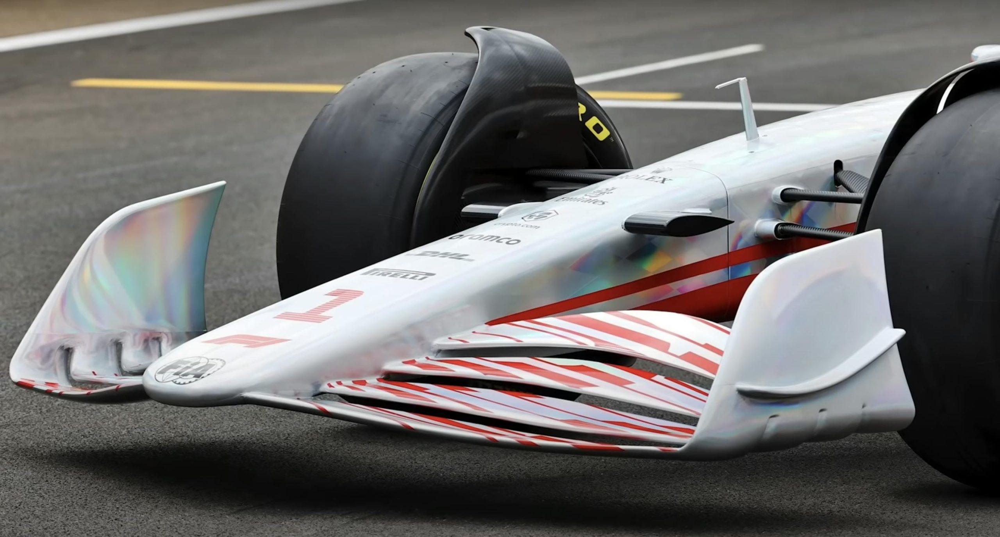
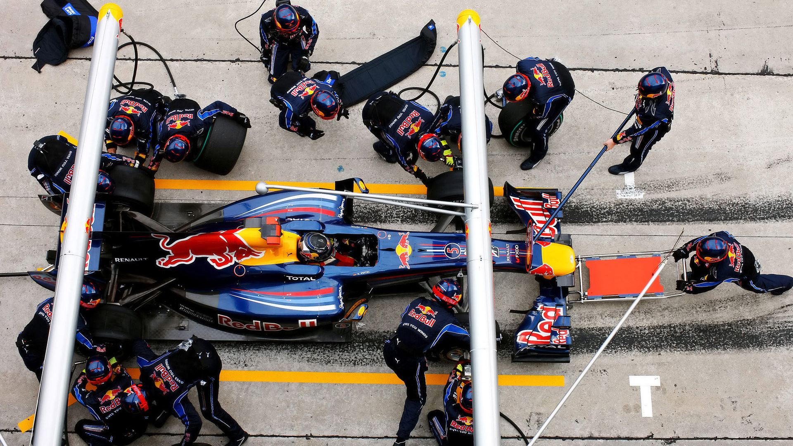

-

Power Unit
Modern Formula 1 cars use advanced hybrid power units. These engines combine speed, efficiency, and electric energy recovery systems to produce incredible performance on track.
-

Aerodynamics
Aerodynamics play a crucial role in Formula 1 car design. The shape of the car, wings, and diffusers are meticulously engineered to maximize downforce and minimize drag, allowing for higher speeds and better cornering.
-

Tires and Race Strategy
Tires play a vital role in Formula 1 racing, affecting grip, handling, and overall performance. Teams must carefully select tire compounds and manage their degradation throughout the race to maintain competitive lap times.

Featured Topic: Modern Formula F1 cars
Formula 1 cars are the pinnacle of automotive engineering, designed for maximum speed, agility, and performance. These cars are built with cutting-edge technology, including hybrid power units, advanced aerodynamics, and lightweight materials. Each team invests millions of dollars into research and development to gain a competitive edge on the track.